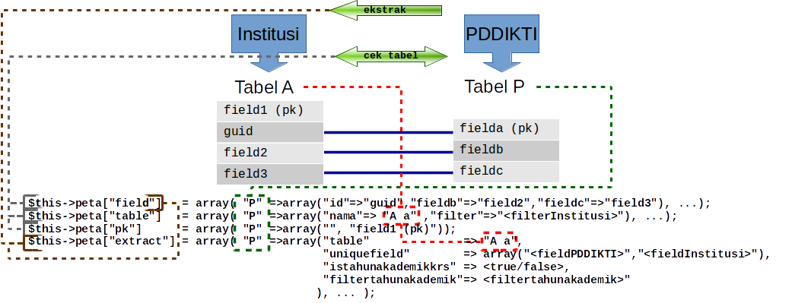
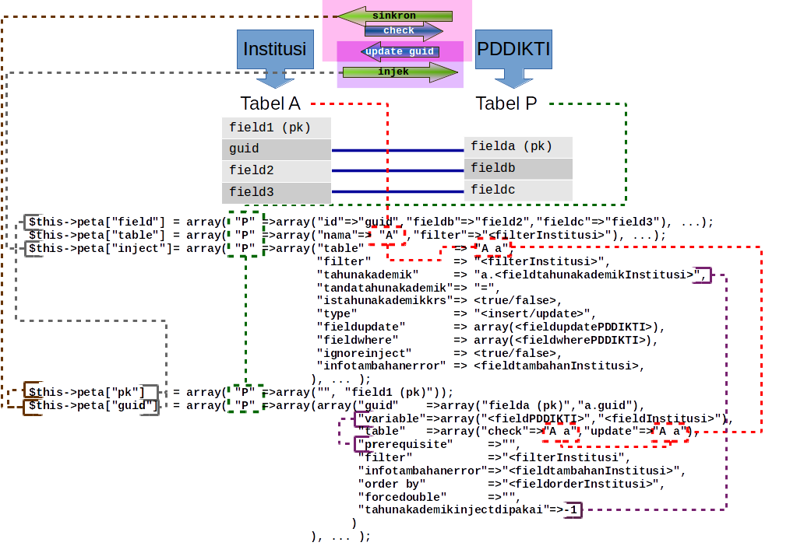

| mapdb |
mapping.inc.php
untuk melakukan pemetaan antara basis data Institusi dengan basis data PDDIKTI
profil https://id.linkedin.com/in/basitadhi
buat 2015-10-30
rev 2017-04-27
sifat open source
Dokumentasi MapDB


* Pada peta["inject"], jika terdapat indeks "jenisfilter" berisi "internalfilter", maka tabel berisi query yang terdapat [internalfilter], misal: select * from A where where [internalfilter]
catatan:
1. rule nama kolom PDDIKTI:
--- dengan raw. -> nama kolom akan ditampilkan tanpa alias, contoh: raw.kolom1 akan ditampilkan kolom1
--- tanpa raw. -> diberikan fungsi trim pada nama kolom, contoh: kolom1 akan ditampilkan trim(kolom1)
--- dengan alias -> nama kolom akan ditampilkan apa adanya, contoh: p.kolom1 akan ditampilkan p.kolom1
2. yang dimaksud tabel institusi dapat berupa tabel, view atau query
3. peta yang harus diisi:
-- a. webservice::cek_tabel()------------ : field, table, pk
-- b. webservice::pddikti_sinkron_guid()- : guid, pk
-- c. webservice::pddikti_injek()-------- : field, inject, lihat 2. Sync GUID
-- d. webservice::pddikti_ekstrak()------ : field, extract |